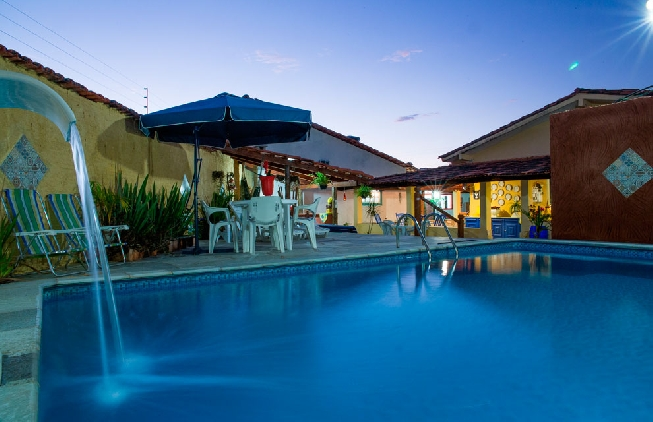
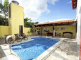

Casas Urbanas:
Flat Águas D'Alma: Confortável flat com duas suítes, cozinha completa, garagem segura e área de lazer com piscina e mesa de sinuca. Acesso fácil ao Rio das Almas.
Endereço: Av. Lourival Mendonça, qd 22, lt 7, casa 11, Setor Meia Ponte, Pirenópolis, GO.

Casa Pireneus III: Uma excelente opção para quem quer curtir uma temporada em Pirenópolis com privacidade e conforto.
Endereço: Av. Benjamin Constant, 43, Centro, Pirenópolis, GO.
Casa Primo de Rosa: Casa completa de 3 suítes com piscina, churrasqueira, rede, cozinha e garagem. Bem localizada em bairro tranquilo, próxima à saída para as cachoeiras.
Endereço: Rua Carajás, Qd 7, Lt 8, Setor Meia Ponte, Pirenópolis, GO.
Casa das Rosas: Casa para aluguel de temporada na Paradisíaca cidade de Pirenópolis em aprazível bairro. Casa segura bem próxima ao Rio das Almas.
Endereço: Av Meia Lua , qd 2 lt 33, Jardim Pireneus, Pirenópolis, GO.

Pousada Vila Vitória: Localizada na avenida que dá acesso às cachoeiras da Serra dos Pireneus, as mais belas de Pirenópolis, em frente ao Museu Rodas do Tempo.
Endereço: Av Meia Lua , qd 2 lt 33, Jardim Pireneus, Pirenópolis, GO.
Casa Pireneus II: Uma excelente opção para quem quer curtir uma temporada em Pirenópolis com privacidade e conforto.
Endereço: Rua Virgílio Godinho, Alto da Lapa, Pirenópolis, GO.

Pirenópolis Hospedagem: Pousadas. Casas e chácaras para temporada. Sempre uma boa opção.
Endereço: Pirenópolis, GO.
Casa Ipê Roxo: Casa para temporada em Pirenópolis com confortáveis acomodações, garagem, piscina e churrasqueira.
Endereço: Rua Maria luiza Cintra, Qd 05 lt 4, Vila Cintra, Pirenópolis, GO.

Casa Pireneus: Uma excelente opção para quem quer curtir uma temporada em Pirenópolis com privacidade e conforto.
Endereço: Rua Humberto Mendonça , qd 03, Setor Meia Ponte, Pirenópolis, GO.
Casa Vista Verde: você vai estar em um lugar privilegiado em Pirenópolis, próximo à saída para as cachoeiras e Parque dos Pireneus. Com um lindo gramado e uma grande mata em frente a casa. Piscina aquecida, Wifi, 4 quartos, garagem p/ 4 carros, churrasqueira e etc.
Endereço: Rua 03 quadra 16 lote 01, Bonfim, Jardim Santa Bárbara, Pirenópolis, GO.
Casa Buena Vista: Casa para temporada com capacidade para 17 pessoas, piscina e área de lazer.
Endereço: Rua Santa Rita de Cássia, Qd 03 lt 07, Mansões Mato do Sobrado, Pirenópolis, GO.
Casa dos Coqueiros: Casa sobrado com 3 quartos, sendo 2 suítes, em local tranquilo e seguro a 2,5 km do centro de Pirenópolis em amplo lote cercado e gramado.
Endereço: Rua 03, Qd. 03, Lt. 08, Jardim Esmeralda, Pirenópolis, Go.

Casa de Joelma: Casa muito gostosa e confortável num local tranquilo e sossegado
Endereço: Rua São Francisco, Quadra 9 Lt/12, Jardim Brasília, Pirenópolis, GO.
Casa João de Barro: Capacidade 12 pessoas em leitos. Com 3 suítes, piscina, churrasqueira e garagem para 5 carros.
Endereço: Rua Cedro, quadra 05 lote 12, Residencial Santa Luzia, Pirenópolis, GO.
Casa Conforto: 5 suítes, piscina, área de lazer com churrasqueira e garagem coberta para 4 carros. Ideal para família e amigos.
Endereço: Rua Pireneus, 70, Casa 1, Pirenópolis, GO.
Casa da Marilene: Excelente opção para quem quer curtir uma temporada com privacidade e conforto em Pirenópolis, numa das principais cidades turísticas do Centro Oeste do Brasil. Possui 6 quartos.
Endereço: Rua Luiz D'Abadia de Pina, Qd 04, Lt 02, Estrela Dalva II, Pirenópolis, GO.
Casa Bela Vista: Casa ampla, confortável, com 4 quartos, piscina aquecida e área de lazer.
Endereço: Rua Petrolina, Qd 9 lt 3, Jardim Brasília, Pirenópolis, GO.
Casa do Edinho: 7 quartos, suíte e piscina com hidromassagem. churrasqueira e garagem. Terraço com linda vista da cidade e da serra.
Endereço: Rua Tiradentes, Qd 06 Lt 09, Vila Cintra, Pirenópolis, GO.

Pousada do Sobrado: Centro Histórico de Pirenópolis pode curtir a cidade de perto, visitar lojinhas de artesanato e conhecer o que a cidade tem de melhor para mostrar.
Endereço: Rua Rui Barbosa, Qd118 lt24, Centro Histórico, Pirenópolis, GO.
Casa Lírios: Conforto, tranquilidade e comodidade em um ambiente agradável e aconchegante, com um ótimo espaço interno e externo.
Endereço: Rua Tupi, Qd 7, Lt 11, Setor Meia Ponte, Pirenópolis, GO.

Casa do Edvaldo: Casa ampla e confortável com 6 quartos, piscina, churrasqueira e garagem para 3 carros.
Endereço: Rua Goianésia, Qd 01 lt 24, Jardim Brasília, Pirenópolis, GO.

Casa Zanotto: Localizada na rua do Carmo bem pertinho da ponte de madeira, de fundos para o Rio das Almas. Aluga-se casa e suítes.
Endereço: Rua do Carmo, 16, Carmo, Pirenópolis, GO.

Recanto Tia Olívia: Piscina, churrasqueira, forno de pizza, fogão a lenha e acomodação para 12 pessoas; Casa a 200 m da rua do Lazer com acomodação para 10 pessoas.
Endereço: Zona Rural, Pirenópolis, GO.

Casa Azul: Próxima a saída para as cachoeiras e Parque dos Pireneus. A 100 metros de avenida comercial com supermercado, farmácia e açougue.
Endereço: Rua Sebastião Augusto Curado, lote 40, Bonfim, Pirenópolis, GO.

Casa Ipê: Casa bem arejada, com excelente área de lazer, piscina com hidromassagem, forno de pizza e churrasqueira. Uma suíte, 2 quartos e mais um reversível, 3 banheiros, uma sala de estar, TV/Antena parabólica, copa com cozinha americana.
Endereço: Rua Ipê quadra 1 lote 07, Santa Luzia, Pirenópolis, GO.

Casa Ana: Casa toda mobiliada em lugar seguro, contamos com tv a cabo, wifi, 4 quartos, sendo 1 suíte, cozinha completa.
Endereço: Av. Juscelino Kubitcheck, 52, Centro, Pirenópolis, GO.

Weekend House: Para quem deseja se hospedar na charmosa cidade de Pirenópolis, com conforto e tranquilidade, oferecemos ótimas opções em casa para temporada.
Endereço: Rua 07, Qd 04, Lt 22, Jardim Esmeralda, Pirenópolis, GO.
Casa e Chácara do Edson: Fica bem próxima da Matriz e Rua do Lazer. Com 3 quartos, sendo 1 suítes. Acomodação para até 10 pessoas. Temos chácara também para aluguel.
Endereço: Rua 02, Qd 01, Lt 08, Centro, Pirenópolis, GO.